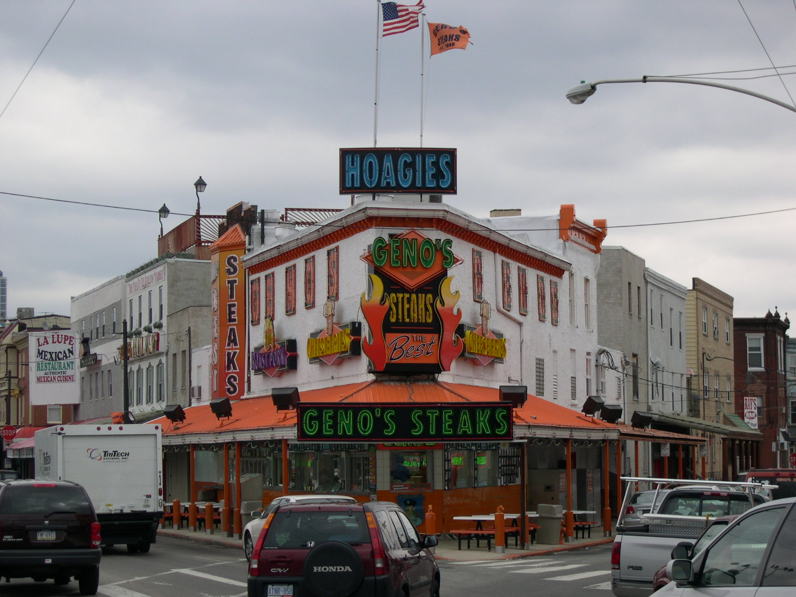
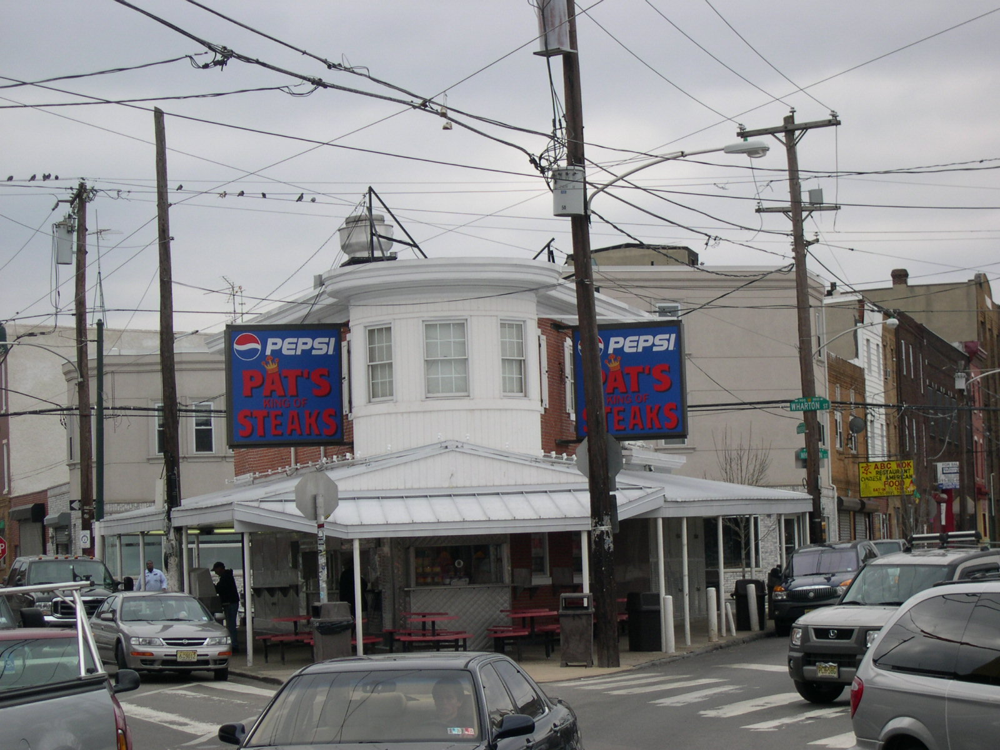

Our Amazing Race - Day 5 of 6
A tickling on my foot woke me up, which I decided to ignore. A second round of tickling got me up. Most of the others were up and rustling about. I ate breakfast, but it wasn't out of hunger, just habit. Life cereal is pretty tasty, and something I haven't purchased in a while.
With our bags packed, ready for our trip home, we were off to the studio. On the way in the car we finished answering the questions on the application. Riding in a moving car is not conducive to writing, so we knew it would need to be filled out in a neater fashion when we got there.
We arrived at the studio at about 7:30. The guy at the front desk had us sign in, and said that we could leave and come back later. The only sign of any other teams was that two others had signed in, and there was one person sitting in the lobby. We still needed to finish filling out the application. Dad went inside to sit down and fill the thing out, while the rest of us stood outside to start the line. The local oldies radio station was set up outside. They had a lame guy doing interviews with random people. He was an idiot and it showed especially during those interviews.
We knew we had two hours to sit there, so we got as comfortable as we could in the windy weather, and started to discuss the plan for the 2 minute taping that they were going to do. We had some ideas about what we would do. Our impressions of how the morning would go were somewhat tainted/influenced by some pictures that we had seen of another open casting call that happened in Kansas City. So at least we knew that there would be this taping, and we knew what others had worn in the past. Other than that, the pictures were a little devoid of useful information.
I can't remember what the group dialog went like. I was a little out of sorts that morning. I knew my two parts were supposed to convey the following:
- I'm Peter, from Salt Lake. I'm an aspiring underwear model and I'm married to my brother's wife's sister, which is legal.
- It's true that we've never spent 30 days together, since my dad was always gone. We should indeed be on the race, since we're intelligent and funny.
The debate and rehearsals for our dialog continued the whole time we were standing there. Some guy was outside the studio and he didn't seem like he was all there. He had little to no teeth, a cup of coffee, and some sort of portable music player. Since the oldies station was there, he'd also stop and listen to that music instead of his own. He'd sing right along with the music (to himself) and essentially rock himself side to side, not really in rhythm with the music, but maybe to his own mental tune. He left, but I still thought it was funny. The application was finally finished, and the conversation returned again to our little dialog.
As we're standing outside, quite a few teams arrived. At one point another team is outside with us sticking it out in the cold, but they give in to the weather and head inside. 9:30 finally rolls around and all of the teams are essentially kicked out of the lobby. We find out that the first 3 teams only are supposed to be inside, and the others will get their turn. Being the 3rd team to sign up, we head inside, only to find that there are already 3 other teams in there. No issue is raised about that, but it is when they finally go to hand out the numbers for the taping. The girl that was sitting there inside now starts claiming that we're team number 4 (probably thinking that the teams that because we walked inside after three teams were already inside), and that her team was team number 1 (which it very well could have been on the sign-in sheet) and whatever. The question was asked as to which TEAM showed up first. Being the first whole team to show up and be there continuously finally we take the first number, and let the other three teams sort out the rest.
The number that we were given was 142. No explanation was really provided as to why they started with 142, but theories abound. We get ready for things by taking off our jackets and fixing our hair. I had a duck's butt (which is when the hair on the back of my head is all messed up) but it never really showed. They have two stools set up, and four microphones. My Dad and Sarah sit down in the chairs, and Alec and I stand up in back. All three of us are wearing red ringer t-shirts (blue rings). They have us hold up our number, tell them where we're from, and then do whatever we'd like for the next two minutes. When the actual dialog started I missed my cue and forgot to say that I was an aspiring underwear model, but other than that... I think things went as well as they could.
We were done. 9:45 or so, and we were done with what we came to do. Some of the teams outside wanted to know what happened, and a little bit was passed on, but that was pretty much it.
We decided to head off to the airport to check on flight options. Options were discussed and one thing was finally settled on - we would go to Chicago, since there were three flights from Chicago direct to Salt Lake. My dad was going to stick with us as long as was necessary. The flight to Chicago was in another couple hours, so we left the airport.
 Alec and I had both expressed strong desires to try the two famous Philly Cheese Steak Sandwich places. I know that I had seen a show about them on Food Network. Sarah found out where they were, and we headed off. We bought two sandwiches from both Pat's King of Steaks as well as from Geno's Steaks for the four of us to split. Having now tried one from both of the places, I can say of whom I am a fan. Before telling you, I will say that the true flavor of the Geno's sandwich was very good. The whole meat, onion and cheese balance, as well as their different bread...  it was very good indeed. With that in mind, the sandwich from Pat's was... delicious. I'm a big fan of a meat-cheese 'goo'. I love goo in most fashions, and Pat's had it down pat, excuse the pun. The meat, onions, and cheese whiz mixture was delicious. Granted, their sandwich was quite a bit greasier, but it was really good. I'm a fan of Pat's.
We also got some Italian ice from some place who's name I can't remember. It was flavored ice, with vanilla custard. It was also really good. I had the lemon, and it had a great flavor. It was (as weird as it may sound) nice that there were pieces of zest in the ice.
Despite some traffic problems in getting back to the airport, and Alec and I having to get the full security scan, we made the flight to Chicago. Having spent the night in Chicago only two nights before, I wasn't anxious to do it again. We had three flights that were leaving from there, so we were hopeful that we would make at least one of them. On the way to Chicago, Alec had me rock-paper-scissor him, best two out of three. The winner would be the one who would get to go home if it came down to there being just one seat available. Alec ended up winning, and even if I had, I still would have given up the title to him. Two kids and a newer-born than I have wins.
The first two flights out of Chicago were a flop. Options were being discussed the whole day. At one point we were possibly going to go to San Francisco, or Spokane, or Cincinnati, all in hopes of catching flights to Salt Lake City. We finally decided that if we didn't get on any of these Salt Lake flights that we would head to Dulles, spend the night, and catch a flight the next morning to Salt Lake City on a Delta flight. The third flight is about to happen, and things are looking... slightly possible. One seat is made available, and Alec ends up getting it, and bids us farewell. The worker says that there MIGHT be an additional seat, and she's going to go check. Right as she's about to go check, a dude rolls up in his wheel chair, and ends up getting on the flight. The plane pulls back, and is off. My hopes of getting home have been pushed back a day.
As we step away from the gate to start to discuss options, we notice that the next gate has a flight going to Boise. Trying our luck yet again, we list ourselves for that flight. My Dad tries to get a rental car lined up for us in Boise so that we can drive from Boise to Salt Lake when we get in.
We end up scoring two seats on the flight. I'm sitting in seat 1A and he's in 3D. I enjoy my fruit and cheese platter thingie and finally fall asleep a couple hours into the flight. I probably only got an hour of sleep or so. As a side note, the lady next to me on the flight had an iPod Shuffle. I found it only ironic, since earlier in the day I had told Alec that I had yet to see anybody with one. He countered it with asking if I would wear it in a visible place if I had one. Anyway, we finally get into Boise at about midnight. This day was finally over, but our day of being awake wasn't. We have a drive ahead of us, which could range in time from 3 hours to 5½ - 6 hours, depending on which person you wanted to believe.